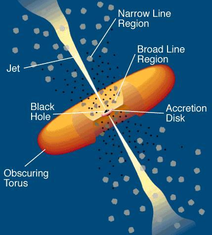
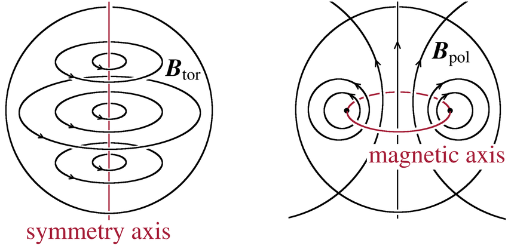
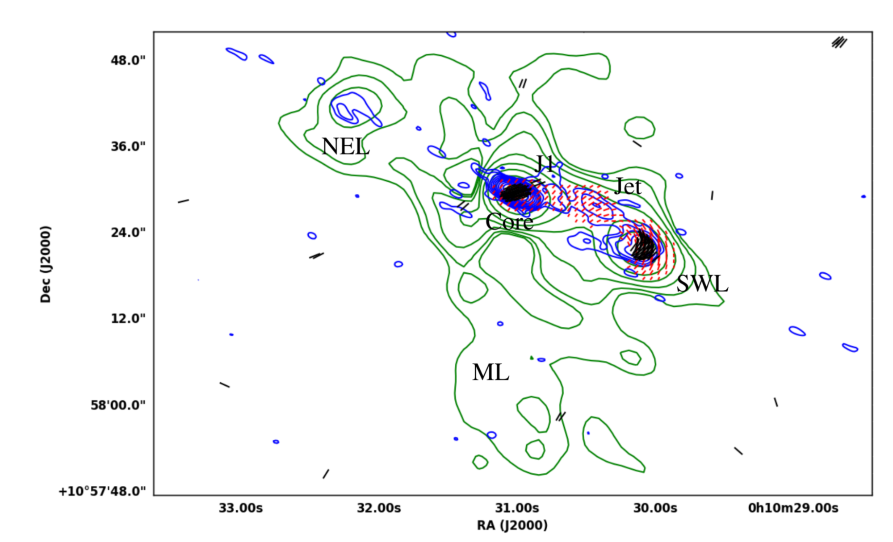
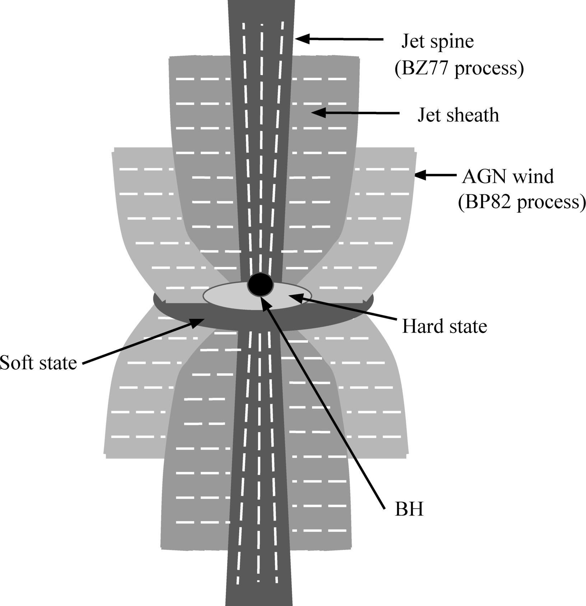

What makes radio-quiet AGN radio-quiet? A polarization perspective
There is a lack of consensus on the origin of radio emission in radio-quiet (RQ) and radio-intermediate (RI) AGN. Primary contenders include low-power radio jets, winds, star-formation and coronal emission. Our multi-frequency, multi-scale radio polarization study has revealed a multi-component (jet + ‘wind’), stratified radio outflow in the two intermediate AGN, III Zw 2 and Mrk 231. Each strata of the outflow has a characteristic magnetic field geometry. Our radio polarization study in conjunction with the [O III] emission-line study of five RQ quasars have provided insights into the interplay of jets, winds and emission-line gas. A close interaction between the different emission components themselves as well as with the local host environments is likely responsible for the stunted nature of the radio outflows in RQ and RI AGN. Our findings are also consistent with the idea that radio-loudness of a source is a function of its epoch of observation.
Introduction
Active Galactic Nuclei (AGN) are among the most energetic and extremely luminous phenomena in the Universe. They emit radiation at all wavelengths of the electromagnetic spectrum. This radiation which is of non-stellar origin is believed to originate from supermassive black holes (BHs; 106 − 109 M⊙, the mass of the sun; see review by Rees, 1984) as matter accretes onto them through an accretion disk. The different constituents of an AGN, some of which have been inferred indirectly from multi-wavelength continuum and spectroscopic observations, include (see Figure 1):
- a BH at the centre of the host galaxy,
- an accretion disk,
- a hot magnetized corona presumably located above the accretion disk,
- high velocity and dense gas clouds (known as the broad line region or BLR) which give rise to the broad emission lines in the optical spectra,
- low velocity and relatively less dense gas clouds (known as the narrow line region or NLR) which give rise to the narrow emission lines in the optical spectra,
- an obscuring torus of gas and dust that hides the BLR clouds from sight for certain viewing angles (Peterson, 1997; Urry & Padovani, 1995).

Figure 1: The standard model of AGN from Urry & Padovani, 1995
A small fraction (10−20%) of AGN also launch relativistic, powerful and collimated structures called jets at radio frequencies (Kellermann et al., 1989; Urry, 2003). These jets are launched perpendicular to the BH-accretion disk interface and extend over scales ranging from a few hundred kiloparsecs (kpc) to several megaparsecs (Mpc). This class of AGN is called the radio-loud (RL) AGN. On the other hand, the majority of AGN (80−90%) launch weak and small-scale radio jets that typically extend to less than 10 kpc. Alternatively, they may also host broadly collimated wind-like or diffuse radio outflows. These constitute the radio-quiet (RQ) class of AGN. The division between RL and RQ AGN is mathematically shown in terms of the radio-loudness parameter (R) given by Kellermann et al. (1989), which is the ratio of radio flux density at 5 GHz to optical flux density in the B-band. According to this definition, RL AGN has R > 10 while RQ AGN has R ≤ 10. Falcke et al. (1996) proposed another class of AGN with intermediate R values (10 < R < 250), known as the radio-intermediate (RI) AGN.
Key concepts
The two widely discussed mechanisms for jet production in the literature include: Blandford & Znajek (1977) mechanism, hereafter referred to as BZ77 and Blandford & Payne (1982) mechanism, hereafter referred to as BP82. In BZ77, the jets are produced by electromagnetic extraction of energy and angular momentum from a spinning BH, while in BP82, the energy and angular momentum are magnetically extracted from the accretion disk. The origin of radio emission in RL AGN is often attributed to the BZ77 mechanism while the origin of radio emission in RQ and RI AGN is poorly understood. It is not clear if their emission mechanism is that of BZ77 or BP82 or both. The possible scenarios for radio emission in RQ AGN as proposed in the literature include low-power jets, winds, star-formation, coronal emission, and a combination of them (e.g., Panessa et al., 2019).
Some of the open questions on jet physics that we are trying to address include:
- Where are the jets launched from?
- What causes the collimation of jets?
- What are the jets composed of?
- Why are the jets in RQ and RI AGN stunted or small-scale as opposed to the large-scale jets in RL AGN?
Radio emission from the jets is basically the synchrotron radiation emitted by relativistic electrons spiraling around the magnetic (B) field lines. Synchrotron emission from an individual electron is highly confined to a narrow cone pointing towards the direction of the electron motion (a process known as “beaming”), and radiation from an ensemble of relativistic electrons is intrinsically linearly polarized. Radio polarization observations can provide information about the orderliness and orientation of the B field giving rise to the synchrotron emission. According to the synchrotron theory, the inferred B fields are parallel to the electric polarization vectors for optically thick regions like the core while perpendicular, in the case of optically thin regions like the jets, lobes and hotspots.
Results
Towards briefly addressing the key questions listed above, we carried out a multi- frequency, multi-scale radio polarization study of the RI Palomar Green quasar, III Zw 2 (Silpa et al., 2021a) as well as of a quasar that is currently transitioning from the RQ to RL state, viz., Mrk 231 (Silpa et al., 2021b) with the upgraded Giant Metrewave Radio Telescope (uGMRT) and the Very Large Array (VLA). We find a stratified radio outflow in these sources, which could either be:
- a “spine-sheath” structure in the radio jet, where the ‘spine’ refers to a narrow relativistic jet component and the ‘sheath’ refers to a broader sub-relativistic jet component, enclosing the spine; or
- a ‘jet + wind’ composite structure, where the ‘wind’ component could either be a magnetized accretion disk wind or the outer layers of a broadened jet (like a jet sheath) or a combination of both.
We find that each component of the stratified outflow has a characteristic B field geometry. Theoretical models emphasize on the importance of helical B fields (which comprise of poloidal and toroidal field components) for the production and propagation of jets. From our study we find that the inferred B fields are parallel to the local direction of the radio outflow in case of the jet spine/jet component while they are transverse in the case of the jet sheath/wind component (see Figure 4). The parallel inferred B fields represent the poloidal component of the helical field while the transverse inferred B fields represent the toroidal component (e.g., see Figure 2).

Figure 2: Magnetic field lines of toroidal (left) and poloidal (right) components from Herbrik & Kokkotas (2017).
With the uGMRT, we also detect a kpc-scale radio lobe to the south in III Zw 2 (annotated as ML in Figure 3) that is misaligned with the primary lobes (annotated as NEL and SWL in Figure 3). Based on the two-frequency spectral index image and electron lifetimes estimated using the “equipartition” equations (O’Dea & Owen, 1987), we find that the misaligned lobe emission does not arise from any past activity of AGN. Rather it is being actively fed by the nucleus through intermittent fueling, similar to the large and ‘alive’ radio lobes observed in the radio galaxy M87 at 330 MHz with the VLA (Owen et al., 2000). The lobe characteristics, such as a mean spectral index between −0.6 and −0.7 and a lack of clear spectral steepening with distance from the core, are also similar to those of the ‘sputtering’ AGN, NGC 3998 (Sridhar et al., 2020), suggesting that the AGN in III Zw 2 is similarly ‘sputtering’. We also note that the curved VLA jet in III Zw 2 terminates in ‘bow-shock-like’ radio structures on either side, instead of compact hotspots typically seen in Fanaroff–Riley Class II radio galaxies. A similar feature is seen in the restarted jet simulations of Clarke & Burns (1991), suggesting the presence of restarted jet activity in III Zw 2, possibly on very short time scales, ranging in decades.

Figure 3: The uGMRT 685 MHz total intensity contours in green with inferred B- fields as red ticks and EVLA 5 GHz B-array contours in blue with inferred B-fields as black ticks, for III Zw 2 (Silpa et al., 2021a). The length of these vectors is proportional to polarized intensity and the orientation of the vectors is determined by the polarization angle. The regions with longer ticks are highly polarized regions while the regions with shorter ticks are less polarized regions. NEL refers to the north-eastern lobe, SWL refers to the south-western lobe and ML refers to the misaligned lobe in III Zw 2.
As already mentioned, RQ and RI AGN are known to be powered by multiple radio emission processes. It is a good exercise to estimate the relative contributions of the individual processes towards the overall budget of the radio emission. This exercise can be carried out for sources that have multi-scale, multi-frequency radio data since different emission components will be sampled at different resolutions and frequencies. We carried out a similar study for Mrk 231, and we have been able to obtain first-order estimates of the relative contributions from the weakly collimated jet, AGN-driven wind, and starburst-driven wind to the total radio emission observed. Our results suggest that while the starburst-driven wind accounts for ∼ 10−20% of the total radio emission, both AGN wind and the weakly collimated jet contribute significantly to the rest of the emission in Mrk 231.
As the radiation propagates through the magneto-ionic medium (i.e. composed of free charges and B fields) between the source and the observer, the two orthogonal components of the electromagnetic wave interact differently with the local free charges. This results in different refractive indices and speeds of propagation for the two components, which in turn induces a delay between them that shows up as a rotation of the plane of polarization. This phenomenon is called Faraday rotation. Owing to the effect of Faraday rotation, the intrinsic polarization angle differs from its observed value by an amount that depends on the square of wavelength. The constant of proportionality is called rotation measure (RM), which physically depends on the line-of-sight component of the B field, and the electron number density and path length of the Faraday-rotating medium. Based on the 3-frequency RM images of Mrk 231, we find that the radio outflow in this source becomes increasingly matter-dominated away from the core, suggesting that the synchrotron plasma mixes with the entrained gas as the radio outflow (jet/lobe and/or wind) propagates through the ambient medium. Thus, the role of the local environments is important to consider while studying AGN outflows.
In a study carried out on a small sample of RQ quasars with the radio polarization data from the VLA and the [O III] emission-line imaging data from the Hubble Space Telescope (HST), we find that the polarized radio emission is more often spatially anti-correlated with [O III] emission (Silpa et al., 2022). A similar anti-correlation has been observed in RL AGN in the literature (e.g., van Breugel et al., 1984) where it has been suggested that the radio emission is depolarized by the emission-line gas. We find evidence for mixing of the entrained thermal gas with the synchrotron plasma in the lobes of these sources, which could be resulting in the internal depolarization of the lobe emission. The anti-correlation between polarization and emission-line gas could be interpreted as a signature of the jet/wind-gas interaction and possibly a source of AGN feedback in these sources. AGN feedback is a process by which the energy and matter are transported from the central engine to the interstellar medium of the host galaxy via AGN outflows like jets and winds, with an effect of either heating and/or expelling the star-forming material or enhancing local star- formation (e.g., Alexander & Hickox, 2012; Fabian, 2012; Morganti, 2017; Harrison et al., 2018).
Discussion
Overall, a close interaction between the multiple components of the radio outflow (jet and wind) and the surrounding gaseous environment may be producing stunted jets in RQ and RI AGN. Drawing analogies from X-ray binaries, we propose a model in Figure 4 that demonstrates a possible connection between the spectral state changes (hard/soft) of the accretion disk and the nature of radio outflows in different radio classes of AGN. In this model, the outer regions of the accretion disk are in soft spectral state, and are characterized by the thermal emission from the Shakura & Sunyaev (1973) disk, which is an optically thick and a geometrically thin disk. The magnetic flux accumulation close to the BH is not efficient enough for the launching of powerful radio jets in case of the thin accretion disk. Therefore, this state produces suppressed radio jets, and strong winds that could either be driven by the BP82 mechanism or could be a jet sheath (see Figure 4).
On the other hand, the inner regions of the accretion disk are in hard spectral state, and are characterized by an advection-dominated accretion flow (Narayan & Yi, 1994), where the energy, instead of being radiated away, is advected into the BH during accretion. This state facilitates the accumulation of magnetic flux close to the BH, and therefore produces a powerful and steady radio jet or the jet spine, driven by the BZ77 mechanism (see Figure 4). Such a co-axial outflow would appear co-spatial in projection, as seen in our sources. It is very likely that the different emission layers like the jet spine/jet and the jet sheath/wind interact with each other (this refers to the region between BZ77- and BP82-driven components in Figure 4). Consequently, this may either disrupt the jet, or most of the mass and energy may be carried away by the wind rather than the jet. This could result in low-powered, small-scaled jets seen in RQ and RI AGN, as opposed to the large-scaled, powerful jets in the RL AGN.

Figure 4: A cartoon to illustrate a possible connection between the changing spectral states of the accretion disk and the multi-component radio outflow in AGN, as inferred from our work on RQ and RI AGN (Silpa et al., 2021a). The white ticks denote the B-field vectors.
Typically, the transition between the hard and soft spectral states in regular RL and RQ AGN occurs on time scales of 106 − 108 yr (Alexander & Leahy, 1987; Enßlin & Gopal- Krishna, 2001; Shabala et al., 2008). However, this may occur on much shorter time scales, like decades, in intermittent/sputtering AGN sources. Such rapid transitions may explain the co-existence of a jet of moderate radio luminosity with an accretion disk wind in such sources. Furthermore, this model is in support of the idea that radio-loudness is a function of the epoch at which the source is observed (e.g., Nipoti et al., 2005; Kunert-Bajraszewska et al., 2020; Nyland et al., 2020). This could imply that the RQ AGN are the sources which are in soft state, launching strong winds and suppressed jets, and RL AGN are the sources which are in hard state, launching powerful jets, at the time of their observations.
Conclusions
The key takeaways from this article are:
- RQ and RI AGN are likely powered by multi-component radio outflows (jet + ‘wind’). Signatures of possible outflow stratification emerge from the different inferred magnetic field structures in the polarization observations.
- A close interaction between the different emission components themselves as well as with the local host environments may be the reason for the stunted nature of the radio outflows in RQ and RI AGN. The radio-loudness of a source may be a function of its epoch of observation.
Original paper: Looking at radio-quiet AGN with radio polarimetry
First Author: Silpa Sasikumar
Co-authors: Preeti Kharb
First author’s Institution: National Centre for Radio Astrophysics (NCRA) - Tata Institute of Fundamental Research (TIFR), Pune, India
Related articles
- A comparison of the properties of Narrow Line and the Broad Line Seyfert galaxies
- Star-forming S0 Galaxies in SDSS-MaNGA: fading spirals or rejuvenated S0s?
- Bending of Cosmic fountains, giving birth to a peculiar X-shaped galaxy
- Bar Buckling and Boxy/Peanut Bulges as the Tracer of Dark Matter Halo Shape